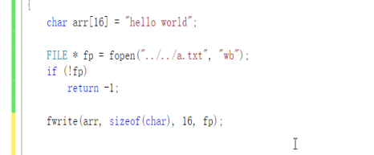

二进制读写：
fwrite写入格式：

fread读取格式：

fseek改变光标的位置
从文件开始移动

从文件结尾开始移动

从当前位置移动：CUR

rweind

总结：
fseek（） 移动光标为位置，参数（文件流 ，移动字节，模式） 模式： SEEK_SET 以文件开头
SEEK_CUR 以文件当前位置 SEEK_END 以文件结尾
ftell (文件流) 获取光标当前为位置 返回值是long类型 -1代表失败
rewind(文件流 ) 重置光标到文件起始位置
文件删除重命名操作：
文件删除

重命名

移动操作

文件缓冲区更新
flush（文件流）

知识点总结:
第一部分
程序编译四步：
1、预处理
2、编译
3、汇编
4、链接
系统函数 ：system 调用系统函数
第二部分
数据类型：
1、基本数据类型： char short int long float double longlong 修饰 const auto extern static unsighend sigend
2、指针数据类型har short int long float double longlong * ** ***
3、结构数据类型：struct union enum typedef
4、运算符：
第一组（） 【】 . ->
第二组 - ++ -- * & ！（类型） sizeof
第三组 * / %
第四组 + -
第五组 > >= < <= == !=
第七组 &&
第八组 ||
第九组 ？ ：
第十组 赋值 =
第十一 ，
5、类型转换
1、隐式转换 2、 强制转换
语句结构
第三部分
条件判断语句
1、 if esle 2. switch case 3 ? :
循环语句
while do while for()
第四部分
数组
数据类型 数组名 【元素个数】 = ｛值1，值2｝；
数组长度 sizeof(数组名)
元素个数 sizeof(数组名) / sizeof(数组[下标])
二维数组： 数组类型 数组名 【行数】【列数】
算法： 冒泡排序
字符串： 是否有\0代表字符串
字符串处理函数：
1、strlen() 求出字符串有效长度
2、strcpy strncpy 字符串拷贝
3、strcmp strncmp（） 字符串比较
4、strcat() strncat () 字符串查找
5、strchar 查找字符在字符串第一次出现的位置
6、strstr 差找字符串在字符串第一次出现的位置
7、strtok（） 字符串切割 切割之后会破坏字符串
8、atoi atol atof
第五部分
函数返回值类型
函数：函数返回值类型 函数名 （形式参数列表） return返回值
函数执行样式： 有参有反 有参无反 无参无反 无参有参
return exit
main(int argc char *argv[ ]
多文件联合编程 头文件 gcc -o 程序 文件1 文件2 文件3 头1 头2
指针：指针是一种数据类型 用来存储变量的地址 指针变量也是变量 int a = 10 ; int *p = &a; * P = 100;通过指针间接改变变量的值
万能指针 野指针 空指针
指针指向数组的指针 int *p = &arr[i]
指针数组 int * p[ ] 数据类型 指针类型 数组元素存储的是地址
二级指针 指向一个一级指针的地址
int a= 10; int * p = &a; int ** pp = &p;
*p = a; ** p = a; *pp = p p &a;
指针和字符串
char * p = "hello word";
const 修饰指针：
const int a =10
const int * p =&a;
int * const p = &a;
const int * const * p = &a;
第六部分
内存管理
作用域：
可执行程序 内存四区 代码区 数据区 堆区 栈区
开辟堆空间
malloc(字节大小) calloc(字节大小) realloc(字节大小)
释放对堆空间
free(地址)
内存操作函数：
memset() 重置内存空间的值
memcpy 拷贝一块内存空间
memmove（） 拷贝一块内存空间
memcmp（） 内存比较
第七部分
结构体
struct 结构体名称 ｛结构体成员列表｝机构体变量名；
sizeof（strcut结构体名称） sizeof(结构体变量名)
结构体内存存储结构：根据结构体数组最大数据类型对齐
结构体数组 存储的是结构体变量
街头体和指针
1 结构体成员列表是指针类型
2结构体指针
3 结构体指针对应开辟的堆空间
结构体嵌套结构体
结构体作为函数参数和返回值
联合体（共用体）
所有成员变量公用一块内存空间
enum(枚举)
enum 枚举名称 ｛成员列表｝成员列表从零开始依次递增
一般配合switch使用
typedef 数据类型名称 别名
第八部分
文件
打开 fopen(文件路径，”模式“)
模式： r w a r+ w+ a+
关闭文件
fclose(文件指针)
字符读写： fgetc fputc
行读写 fgets fputs
块读写 fread fwrite
格式化的读写操作
scanf() printf()
sscanf() sprintf()
fscanf() fprintf()
文件光标操作
fseek ftell rewind
文件删除 remove
文件重命名 (剪切)rename
更新文件缓冲区：fflash(文件指针)